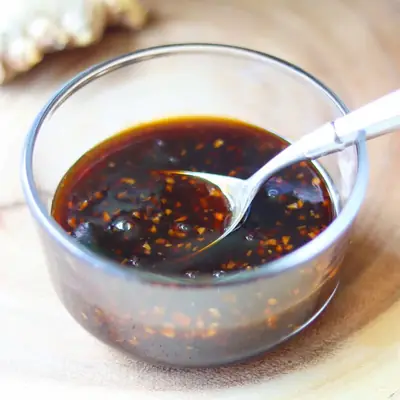

Healthy Teriyaki Sauce

Ingredients
- 1/3 cup low sodium soy sauce
- 1/3 cup orange juice or pineapple juice
- 3 tablespoons maple syrup (or honey)
- 1 tablespoon apple cider vinegar
- 2 teaspoons minced garlic
- 2 teaspoons grated ginger
- 2 teaspoons cornstarch (combined with 2 tsp cold water)
Steps
- In a small saucepan, whisk together the soy sauce, juice, maple syrup, apple cider vinegar, garlic, and ginger.
- Bring the mixture to a gentle simmer over medium heat.
- In a small bowl, stir the cornstarch with water until smooth to make a slurry.
- Slowly whisk the slurry into the saucepan. Continue cooking, whisking frequently, until the sauce thickens and becomes glossy (about 2–3 minutes).
- Taste and adjust sweetness or tanginess as needed (add a little more maple syrup for sweeter, or vinegar for more tang).
- Let cool slightly, then enjoy as a glaze, marinade, or dipping sauce—or store in an airtight jar in the fridge for up to a week.
Recipe by Min Kwon · Kidfriendly Meals, from MJ and Hungryman. Saved here for personal use; the original has the full notes, tips and photos. Open original